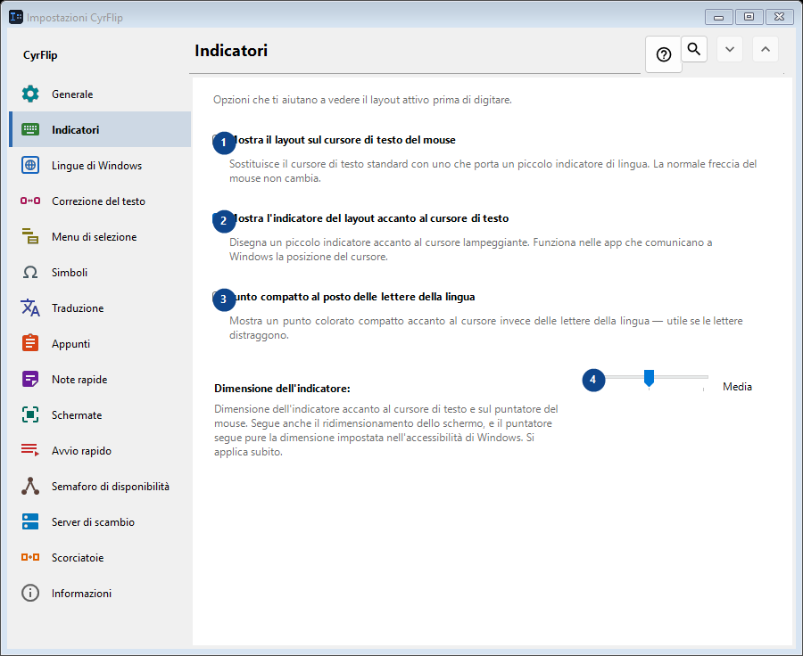
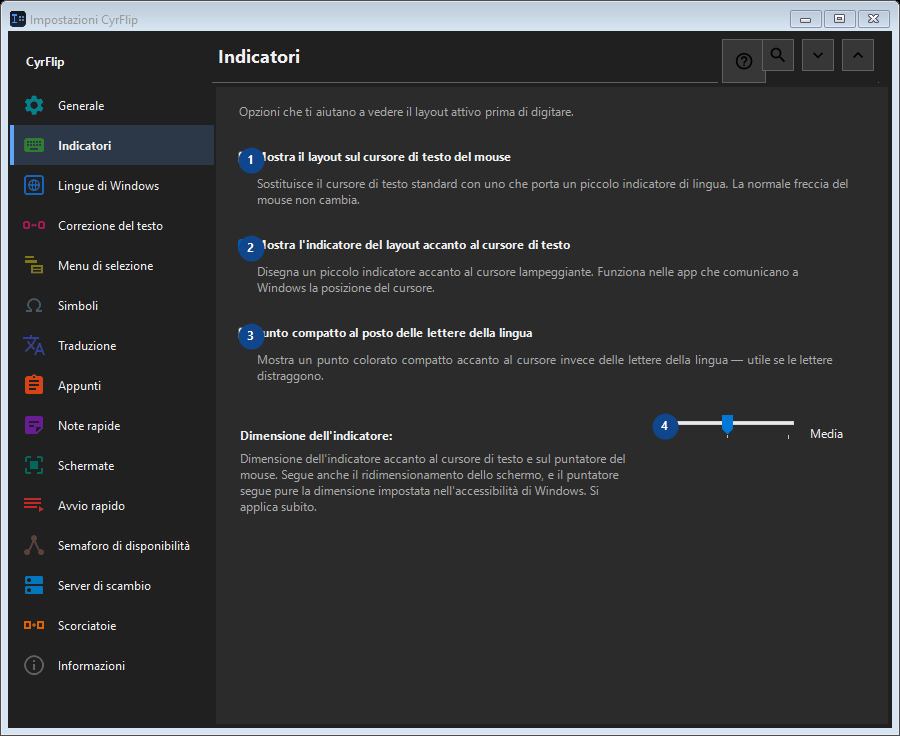

Indicatori
A cosa serve
Opzioni che ti aiutano a vedere il layout attivo prima di digitare.


Ordine delle operazioni
Le impostazioni si applicano subito. Non serve un ordine preciso; usa i gruppi qui sotto.
Elementi
1. Mostra il layout sul cursore di testo del mouse
Sostituisce il cursore di testo standard con uno che porta un piccolo indicatore di lingua. La normale freccia del mouse non cambia.
Le tue scorciatoie2. Mostra l'indicatore del layout accanto al cursore di testo
Disegna un piccolo indicatore accanto al cursore lampeggiante. Funziona nelle app che comunicano a Windows la posizione del cursore.
Le tue scorciatoie3. Punto compatto al posto delle lettere della lingua
Mostra un punto colorato compatto accanto al cursore invece delle lettere della lingua — utile se le lettere distraggono.
Le tue scorciatoie4. Dimensione dell'indicatore
Scegli o inserisci il valore indicato dall’etichetta vicina. Controllalo prima di continuare.
Le tue scorciatoie